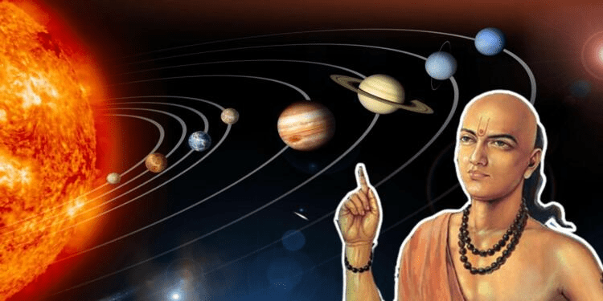
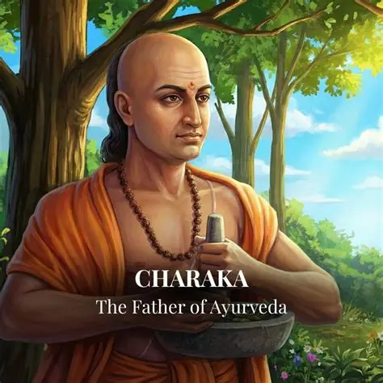
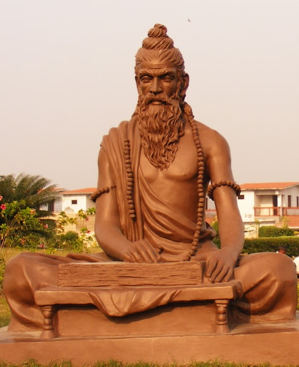
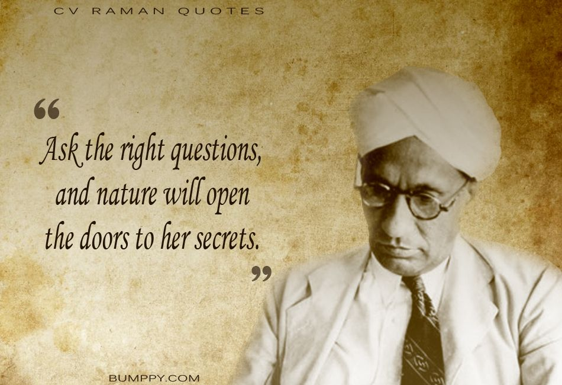
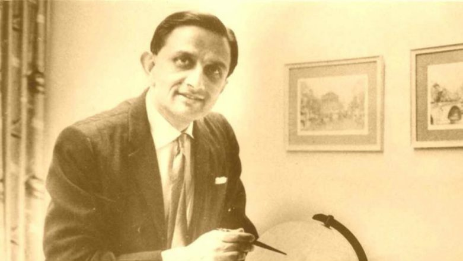

Chapter 3
Great Indian Scientists

Aryabhata
A pioneer of mathematics and astronomy who calculated the value of π and explained planetary motion.

Charaka
Known as the Father of Ayurveda for his remarkable contributions to ancient Indian medicine.

Sushruta
Often called the Father of Surgery because of his pioneering surgical techniques.

C. V. Raman
Winner of the Nobel Prize in Physics for discovering the Raman Effect.

Vikram Sarabhai
Founder of India's space programme and the visionary behind ISRO.

Dr. A. P. J. Abdul Kalam
The Missile Man of India who inspired millions through science, leadership and education.